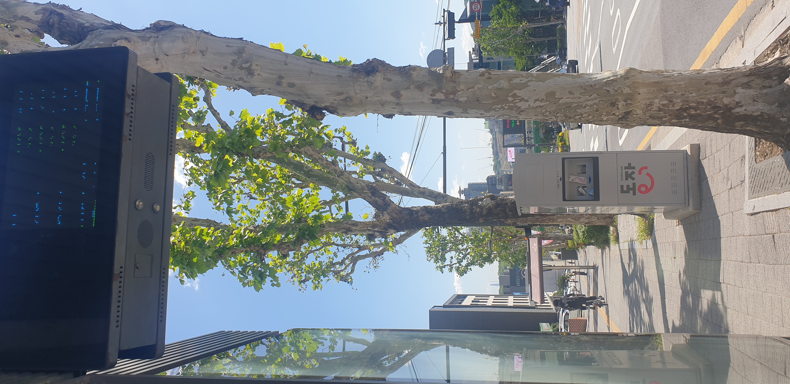

Narration Script
햇살이 가득 내려앉은 서울 동작구의 어느 나른한 오후입니다. 버스 정류장의 그늘 아래 잠시 멈춰 서서 도심이 주는 뜻밖의 평온함을 마주합니다.
머리 위로 높게 뻗은 플라타너스 나무들이 가장 먼저 시선을 사로잡습니다. 세월을 견뎌온 얼룩덜룩한 나무껍질은 강인한 생명력을 보여주고, 그 끝에 매달린 투명한 초록빛 잎사귀들은 오후의 햇살을 머금어 눈부시게 반짝입니다. 나뭇잎 사이를 비집고 들어온 볕은 보도블록 위에 부드러운 빛의 조각들을 수놓습니다.
정류장 한편에 자리 잡은 ‘DONGJAK 도착’ 스마트 키오스크는 묵묵히 제 자리를 지키며 누군가의 기다림을 돕고 있습니다. 옆면의 커다란 유리창에는 거리의 풍경이 길게 반영되어, 도시의 일상이 마치 한 폭의 그림처럼 겹쳐 보입니다.
그 고요한 풍경 속으로 자전거를 탄 한 사람이 유유히 멀어집니다. 바쁜 도심의 속도에서 한 발짝 물러난 듯한 그 뒷모습에서 이 오후가 가진 느긋한 리듬이 전해집니다.
차가운 아스팔트와 따스한 자연이 조화롭게 어우러진 이 순간. 소란스러운 도시의 소음조차 나뭇잎 흔들리는 소리에 묻혀 멀어지는, 참으로 맑고 싱그러운 동작구의 오후입니다.
Listen to the Narration
Click play to begin experience